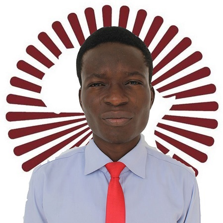

01
Dynamic Modeling
First-principles ODE/PDE models, nonlinear systems, neural ODEs, and stochastic models.

Applied Mathematics · Control · Scientific Computing
I am an Applied Mathematics PhD researcher at Bowling Green State University. My work connects first-principles modeling, neural ODEs, state estimation, optimization, and feedback control to industrial glass-melting systems and other real-world problems.
About
My research spans mathematical modeling, control systems, numerical analysis, physics-informed machine learning, mathematical biology, and quantitative analysis. I am especially interested in translating high-fidelity physical descriptions into models that can support estimation, control, and operational decisions.
My academic path across Nigeria, Cameroon, Italy, Poland, Germany, and the United States has prepared me to work across mathematical, engineering, and scientific disciplines. I have also taught college algebra, calculus, and dynamical-systems modeling.
Expertise
01
First-principles ODE/PDE models, nonlinear systems, neural ODEs, and stochastic models.
02
PID/FOPID, LQR, Luenberger observers, controller tuning, and state-space analysis.
03
Numerical analysis, simulation, optimization, model reduction, and reproducible computation.
04
Probability, economic-dependent mortality, actuarial models, and data-informed decisions.
Python, MATLAB, R, SQL, Microsoft Excel, GNUPlot
Numerical analysis, convex optimization, matrix analysis, probability, ODE/PDE modeling
Technical reporting, LaTeX typesetting, presentations, interdisciplinary collaboration
ANSYS, Onshape, LibreCAD, and basic LAMMPS/VMD
Experience
College of Engineering, Bowling Green State University
Aug. 2025–Present
Department of Mathematics & Statistics, Bowling Green State University
Aug. 2024–May 2025
African Institute for Mathematical Sciences, Cameroon
Nov.–Dec. 2019
Adekunle Ajasin University, Nigeria
Dec. 2017–Oct. 2018
Research
A multidisciplinary project developing dynamic models and control formulations for industrial glass melting.
With Patrick Nyadjo. Investigated actuarial models for Social Security benefits and how economic-dependent mortality can affect benefit calculations and progressivity.
Master’s research at Gdańsk University of Technology under Dr. Szymon Winczewski, examining the mathematical decomposition of the second-nearest-neighbor modified embedded-atom-method potential.
Mathematical modeling, mathematical biology, numerical analysis, physics-informed neural networks, control systems, and quantitative analysis.
Discrete and continuum mechanics, matrix analysis, mathematical analysis, control systems, physics of materials, scientific research methodology, convex optimization, computer modeling and materials design, and probability theory.
Scholarship
Is increased mortality by multiple exposures to COVID-19 an overseen factor when aiming for herd immunity?
Co-author · PLOS ONE, 16(7), e0253758 · 2021
Read the articleThe impact of COVID-19 vaccination campaigns accounting for antibody-dependent enhancement
Co-author · PLOS ONE, 16(4), e0245417 · 2021
Read the articleEducation
Bowling Green State University · Bowling Green, Ohio, USA
Aug. 2024–Present
Gdańsk University of Technology · Poland
Oct. 2023–Jan. 2025 · Grade: Dobry Plus
University of L’Aquila · Italy
Sept. 2022–Sept. 2023 · 108/110
African Institute for Mathematical Sciences · Cameroon
Oct. 2018–June 2019 · Very Good Pass
Thesis: Dynamic Population Model of Aquatic and Adult Mosquito Stages
University of Ilorin · Nigeria
Sept. 2013–Oct. 2017 · First Class Honors
GPA: 4.77/5.00 · Thesis: Free Inverse Semigroup
DAAD-supported guest research at Eberhard Karls University of Tübingen and Hochschule Mittweida University of Applied Sciences, 2019–2021.
Recognition
AI-Ready Ohio · 2026
Enterprise Technology Association training on the responsible use of AI in professional environments and the use of AI for policymakers.
Great Lakes AI Week Conference · 2025
Bowling Green State University, Ohio.
American Mathematical Society · 2024–Present
Leadership & service
2025–Present
Coordinates association activities, outreach, publicity, university compliance, and faculty correspondence at BGSU.
2023
Coordinated laboratory scheduling, activities, materials inventory, and equipment concerns in Gdańsk.
2017–2018
Helped organize vocational training, public-health sensitization, and a secondary-school mathematics quiz during Nigeria’s National Youth Service.
English (full professional proficiency), Yoruba (native), Italian (A2), French (A2), and Polish (A1).
Contact
I welcome conversations about internships, mathematical modeling, scientific computing, control systems, quantitative analysis, and interdisciplinary research.